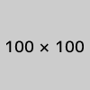

Summary
不透明度。
Syntax
<style type="text/css"> #opacity { filter: progid:DXImageTransform.Microsoft.Alpha(opacity=50); /* for IE */ height: 100%; /* for IE7- */ opacity: 0.5; /* for Std */ } </style>
<div id="opacity">  Text </div>
Example
Text